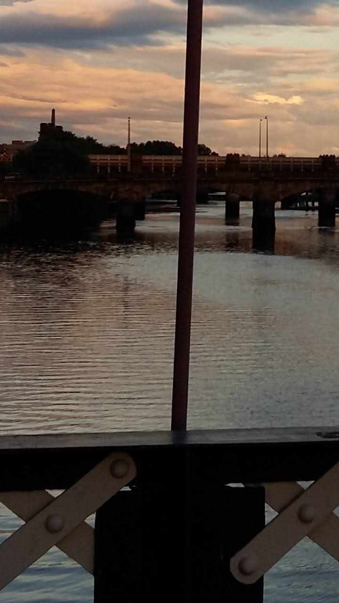
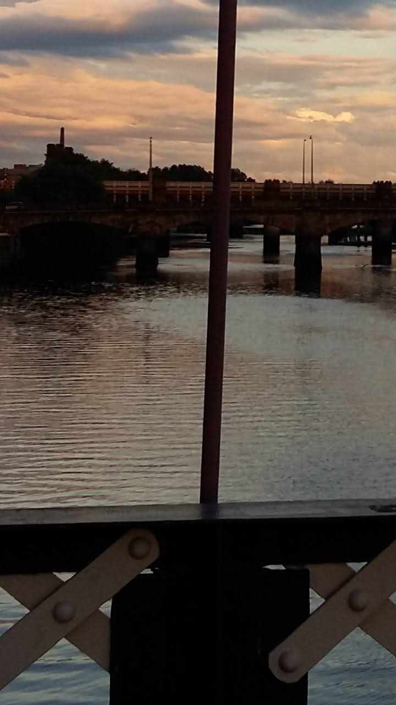

some diaries of light, or not-light
getting lost in bookworks, getting lost on land, getting lost in the computer,
cycling out and not coming all the way back.
 

27/09/20 Smoke running Clydeside. Poles and bridges come up lavender.


27/09/20 I wonder about diaries, and about walking in circles, about being interrupted by strange lights.


27/09/20 I wonder about last words. Surely, they must weigh something in grams.
Like dust: a stange cover.